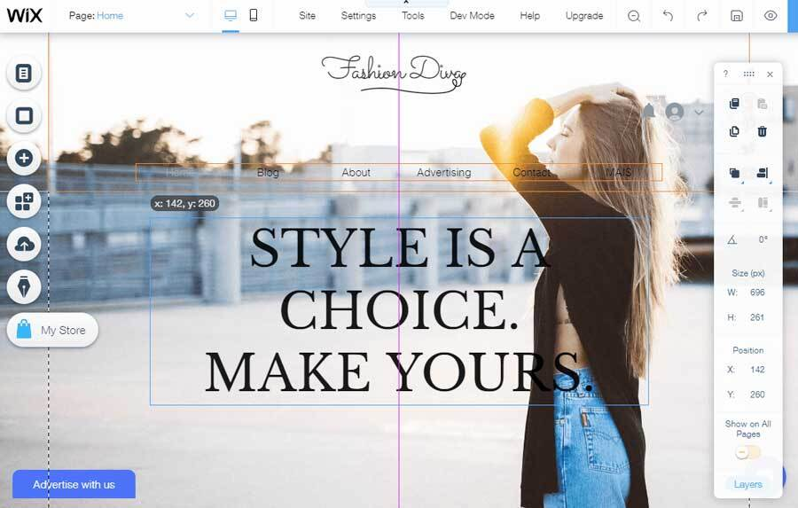

A3: Building Team Web Portfolio
Week 1, reflections on building a Team Web Portfolio
For this project we have formed a four-member team that consists of Natàlia Avellà, Neea Ahonen, Vera Mai and me, Anni Perttula. Our team name for this project is PixelPioneers. Our first task as a team was to choose our platform for creating our Team Web Portfolio for the Digital Service Design course. Most of the pioneers had experience in multiple different platforms but we ended up choosing online webpage building platform called Wix as our tool for this project. On Wix it would be fast and efficient enough to document our project process and key findings. Team agreed on unison Wix being flexible platform that will let us concentrate more on the quality of our research. We had previous experience in using Wix as webpage creation tool within our team which also affected our decision making on platform. You can access our Team Portfolio webpage HERE for a closer look on our project progress.
Wix is a great platform because it allows multiple page editors simultaneously, so working online independently or remote, is possible and a very crucial feature for our team. Any of the team members can edit Team Web Portfolio anytime, anywhere. Wix is an easy-to-use online tool that doesn't require coding unless you want to specifically customize a certain block. Wix operates based on templates, widgets, customizable blocks, and ready-made gadgets that can be used to create your own customizable website. Wix uses simple drag and drop option as editor tool. Using Wix platform is free, and it can be connected to your already existing domains. Wix has a very user-friendly layout that requires minimal effort to master meaning all team members can fluently use Wix without long adjustment period. This way we can move on working on our different project phases instead of learning a new tool.
We completed our first week's task of creating ta landing page, adding welcome and team members feature rather fast. After dividing tasks for first week, each team member was able to work on the project at their own pace. Common deadline was set to match with the given submission deadlines on Moodle. This made first week of tasks highly efficient, and workload was spread evenly. This way of working has proven to work for our team, and we plan to execute same working habit on our next task. For further progress we are going to need a task manager or team moderator who is responsible for overall deadlines and monitoring workload in order to keep working fluently.
